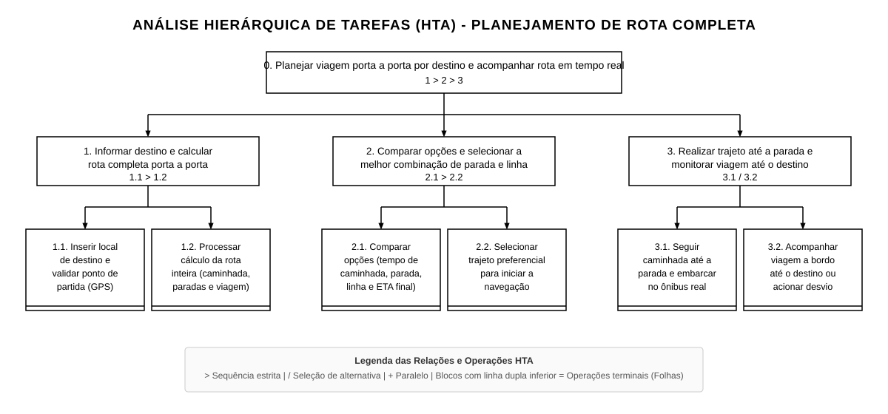
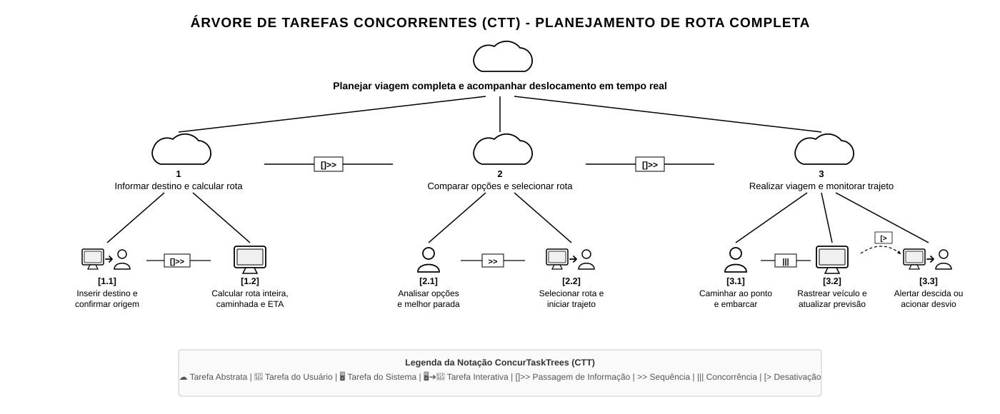

TAR-03: Planejamento de Rota Completa (Porta a Porta) por Destino com Indicação de Paradas e Previsão de Chegada¶
Histórico de Versão e Contribuição¶
| Data | Versão | Descrição | Autor(es) | Revisor(es) |
|---|---|---|---|---|
| 27/09/2026 | 1.0 | Elaboração completa da Análise de Tarefas (HTA, CTT e GOMS/KLM) para a tarefa do Passageiro Cotidiano. | Arthur Mariani e Lucas Araújo | Carlos Costa |
| 25/10/2026 | 1.1 | Correção e aprimoramento da Análise de Tarefas (HTA e CTT), refinando a decomposição de objetivos, inclusão do cálculo de rota porta a porta e atualização dos diagramas. | Lucas Araújo | Arthur Mariani |
1. Introdução¶
Este documento analisa a tarefa de planejamento integral de deslocamento no transporte público coletivo do Distrito Federal (SEMOB-DF), estruturada a partir do conceito de planejamento de rota multimodal porta a porta (door-to-door transit route planning), consagrado em sistemas de referência nacionais e internacionais como Google Maps (Transit), Moovit e Citymapper.
Nesses sistemas funcionais modernos, a interação do passageiro é drasticamente simplificada: o usuário não precisa saber previamente qual linha pegar nem onde ficam os pontos de ônibus. Ao informar unicamente para onde deseja ir, o sistema utiliza a sua localização atual e calcula a rota inteira: 1. Identifica as paradas de embarque viáveis no entorno e destaca a melhor parada; 2. Informa com precisão o tempo estimado de caminhada a pé até essa parada; 3. Mostra a previsão de chegada do ônibus em tempo real à parada (via dados de telemetria GPS); 4. Calcula a duração do percurso dentro do ônibus, baldeações necessárias e o tempo total em que o passageiro chegará ao destino final (Estimated Time of Arrival - ETA).
A presente análise modela como incorporar essa funcionalidade ao portal/aplicativo da SEMOB-DF, superando o modelo atual fragmentado e proporcionando ao cidadão uma ferramenta prática, transparente e eficaz para seu cotidiano.
2. Caracterização da Tarefa¶
- Identificador da Tarefa:
TAR-03 - Título: Planejamento de Rota Completa (Porta a Porta) por Destino com Indicação da Melhor Parada e Tempo Estimado de Chegada (ETA)
- Persona Primária Associada: Marcos Paulo Vieira (Passageiro Cotidiano)
- Perfil de Usuário: Passageiro do STPC/DF (Usuário Primário)
- Responsável pela Elaboração: Lucas Araújo
- Objetivo da Tarefa: Permitir que o passageiro planeje e execute seu deslocamento completo inserindo apenas o destino desejado (com origem automática via GPS ou informada manualmente), de modo que o sistema calcule a rota inteira: apresente as opções de paradas e recomende a melhor parada de embarque, informe o tempo de caminhada a pé até o ponto, a previsão em tempo real da chegada do ônibus e o horário estimado de chegada ao destino final, guiando o usuário ao longo de todo o trajeto.
3. Análise Hierárquica de Tarefas (HTA)¶
A Análise Hierárquica de Tarefas (HTA - Hierarchical Task Analysis) foi proposta originalmente por Annett e Duncan (1967) e consolidada em Interação Humano-Computador por Barbosa et al. (2021, pp. 177–183) para examinar o trabalho humano decompondo tarefas complexas em objetivos, subobjetivos e operações atômicas, mapeando as condições sob as quais as ações são ativadas (planos) e identificando riscos de erro e oportunidades de reprojeto.
3.1 Diagrama Hierárquico de Tarefas (Representação Gráfica)¶
O diagrama abaixo ilustra a decomposição da tarefa no padrão visual e estrutural rigoroso da TAR-01 (Igor Dantas), com disposição retangular de caixas, linhas ortogonais, notação padrão de planos e destaque com linha dupla inferior para nós terminais de operações:

Figura 1 — Diagrama HTA: Planejamento de Rota Completa por Destino e Acompanhamento em Tempo Real.
Legenda: A numeração decimal indica os níveis de decomposição hierárquica; as linhas conectam objetivos aos seus subobjetivos; “>” indica sequência estrita, “/” indica seleção conforme circunstâncias e “+” indica execução em paralelo/ordem flexível. Os blocos do último nível com linha dupla inferior representam operações terminais (folhas).
Fonte: Lucas Araújo Lima (2026), adaptado de Barbosa et al. (2021).
3.2 Tabela Detalhada do HTA (Tuplas e Análise de Falhas)¶
Conforme Barbosa et al. (2021, p. 179), cada operação é especificada formalmente por uma tupla composta por ⟨Input, Ação, Feedback⟩, associada a um plano que define sua ativação. A tabela a seguir relaciona cada objetivo e operação folha aos problemas encontrados no portal da SEMOB-DF e às recomendações de IHC formuladas para o reprojeto.
Tabela 1 — Tabela Detalhada da Análise Hierárquica de Tarefas (HTA) da TAR-03
| Objetivos / Operações | Plano de Execução | Tupla de Operação ⟨Input, Ação, Feedback⟩ | Problemas Potenciais / Detectados no Sistema Atual | Recomendações de IHC |
|---|---|---|---|---|
| 0. Planejar viagem porta a porta por destino e acompanhar rota inteira em tempo real | Plano 0: Executar 1 para calcular a rota inteira, comparar as alternativas e escolher a melhor parada/linha em 2, e executar o deslocamento com acompanhamento em tempo real em 3 (1 > 2 > 3). | Input: Necessidade de deslocar-se até determinado local sem saber qual ônibus pegar, quanto tempo demora a caminhada até a parada ou quando o veículo chegará. Ação: Digitar o destino, escolher a rota recomendada e seguir as orientações até o destino final. Feedback: Rota completa traçada no mapa com tempo de caminhada, previsão do ônibus e horário exato de chegada ao destino (ETA). |
O portal atual exige que o cidadão conheça previamente a linha ou consulte PDFs estáticos de horários teóricos, sem integração de mapas, rotas a pé ou cálculo de chegada. | Implementar buscador unificado "Para onde você quer ir?", com cálculo algorítmico da rota completa (caminhada + ônibus + chegada) nos moldes do Google Maps e Moovit. |
| 1. Informar destino e calcular rota completa porta a porta | Plano 1: Inserir o local de destino e confirmar a origem (1.1) e aguardar o processamento automático da rota inteira pelo sistema (1.2) (1.1 > 1.2). | N/A (Subobjetivo intermediário). | Falta de inteligência de busca no portal; o passageiro não consegue pesquisar por endereço ou ponto de interesse popular. | Disponibilizar campo de busca preditiva de destino no topo da tela com detecção instantânea da localização GPS do usuário. |
| 1.1. Inserir local de destino e validar ponto de partida (GPS ou manual) | Operação (Nível Folha) | Input: Campo de busca "Para onde você quer ir?" com origem pré-definida em "Sua Localização Atual (GPS)". Ação: Digitar nome do local, bairro ou ponto de interesse (ex.: "SIA Trecho 3", "UnB Gama") e confirmar. Feedback: Destino identificado e opções de itinerários geradas instantaneamente. |
O usuário é forçado a selecionar pontos em listas codificadas por números que não correspondem à sua experiência espacial. | Campo único com autocomplete, permitindo sinônimos populares e correção de grafia (fuzzy search), mantendo a origem automática via GPS com opção de troca manual. |
| 1.2. Processar cálculo da rota inteira (caminhada, paradas e tempo de viagem) | Operação (Nível Folha) | Input: Coordenadas de origem e destino, malha viária de pedestres e telemetria GPS em tempo real dos ônibus. Ação: Algoritmo do sistema cruza os dados e calcula os trechos de caminhada e os tempos de trânsito. Feedback: Apresentação de rotas multimodais integradas com indicação da melhor parada, tempo a pé, tempo no ônibus e ETA final. |
O sistema atual não calcula tempos reais de caminhada nem prevê tempo de percurso do coletivo, gerando incerteza absoluta sobre o horário de chegada. | Integrar motor de roteamento multimodal com a API de telemetria da frota, calculando velocidade média das vias e distância a pé até cada parada. |
| 2. Comparar opções e selecionar a melhor combinação de parada e linha | Plano 2: Comparar os cards de rotas com suas respectivas paradas e tempos (2.1) e selecionar o trajeto preferencial (2.2) (2.1 > 2.2). | N/A (Subobjetivo intermediário). | O passageiro não tem como comparar se vale a pena andar um pouco mais para pegar um ônibus expresso ou ficar na parada mais próxima. | Estruturar cards claros comparando o tempo a pé até a parada, a linha sugerida e o horário final de chegada ao destino. |
| 2.1. Comparar opções (tempo de caminhada, melhor parada, linha e ETA final) | Operação (Nível Folha) | Input: Lista de rotas sugeridas pelo sistema com destaques visuais. Ação: Analisar tempo de caminhada até a parada recomendada, horário de passagem do ônibus e horário de chegada ao destino. Feedback: Destaque para o card "Melhor Opção / Mais Rápida" (ex.: "Parada 2 a 4 min a pé • Linha 0.818 passa em 6 min • Chegada às 08h35"). |
Ausência de clareza sobre qual parada no quarteirão atende àquela linha e quanto tempo leva a caminhada. | Destacar no card: nome/foto da parada, tempo a pé (ex.: "Caminhada de 300m / 4 min"), horário previsto do ônibus e horário de chegada no destino final. |
| 2.2. Selecionar trajeto preferencial para iniciar navegação e acompanhamento | Operação (Nível Folha) | Input: Toque no card de rota escolhido pelo passageiro. Ação: Tocar no botão "Iniciar Trajeto" ou no próprio card. Feedback: Tela transiciona para o modo de navegação passo a passo, traçando a linha de caminhada até a parada no mapa e ativando o rastreador do ônibus. |
Links minúsculos e botões desconexos no portal que abrem arquivos PDF externos em vez de telas interativas. | Card inteiro clicável com alvo de toque adequado (mínimo de 48 × 48 px - Lei de Fitts) e botão de ação primária destacado ("Iniciar Rota"). |
| 3. Realizar trajeto até a parada e monitorar viagem até o destino final | Plano 3: Seguir a rota a pé e embarcar no ônibus (3.1) e, a bordo, acompanhar a viagem até a descida OU acionar contingência em caso de retenção crítica (3.2) (3.1 / 3.2). | N/A (Subobjetivo intermediário). | O passageiro chega à parada e não sabe se o ônibus já passou, gerando ansiedade e sensação de desamparo. | Sistema fornece navegação orientada com contagem regressiva em tempo real e notificações automáticas de aproximação. |
| 3.1. Seguir caminhada até a parada indicada e embarcar no ônibus em tempo real | Operação (Nível Folha) | Input: Instrução de caminhada na tela e posição em tempo real do ônibus no mapa. Ação: Caminhar até a parada indicada e aguardar a chegada física do coletivo. Feedback: Mapa atualizado com o ícone do ônibus se aproximando e aviso sonoro/vibratório: "Seu ônibus está a 200m da parada". |
Atrasos na renderização de mapas pesados em smartphones e falta de confirmação se o ônibus está de fato em operação. | Mapa vetorial leve com atualização contínua (WebSocket/SSE) e indicação do status do veículo ("Veículo em trânsito com ar-condicionado e acessibilidade"). |
| 3.2. Acompanhar viagem a bordo até o destino ou acionar rota de contingência | Operação (Nível Folha) | Input: Passageiro a bordo do ônibus; monitoramento do trajeto e tempo restante até o destino final. Ação: Acompanhar paradas restantes até o desembarque OU tocar em "Recalcular" caso haja acidente/desvio na rota. Feedback: Aviso de desembarque ("Desça na próxima parada") e confirmação de chegada no horário previsto (ETA). |
(Risco Alto) Falta de aviso sobre a parada exata de descida faz com que pessoas percam o ponto, especialmente à noite ou em regiões desconhecidas. | (Recomendação Crítica): Alerta proativo de descida ("Próxima parada é a sua") e botão de contingência em 1 toque que sugere alternativas imediatas se o tráfego estagnar. |
Fonte: Lucas Araújo Lima (2026), adaptado de Barbosa et al. (2021).
3.3 Análise de Severidade de Operações e Critério (P × C)¶
Pelo critério P × C proposto na metodologia HTA (Annett & Duncan, 1967; Barbosa et al., 2021), em que P representa a probabilidade de falha ou erro na execução e C corresponde ao custo ou gravidade da consequência do erro, identificam-se as operações críticas da tarefa:
- Operação 1.1 (Inserir local de destino e validar ponto de partida):
- Probabilidade de Falha (P): Média. O passageiro utiliza nomenclaturas populares, nomes de prédios públicos ou abreviações que divergem dos nomes cadastrais oficiais da base de dados da SEMOB.
- Custo da Consequência (C): Alto. O sistema retorna "Nenhum resultado encontrado", levando o cidadão a crer que não existe transporte público para sua localidade, desestimulando o uso do transporte coletivo.
-
Avaliação de Risco (P × C): ALTO. O design de IHC deve garantir busca preditiva tolerante a erros ortográficos (fuzzy matching) e mapeamento de locais notórios e sinônimos populares do DF.
-
Operação 2.1 (Comparar opções com tempo de caminhada, melhor parada e ETA final):
- Probabilidade de Falha (P): Média. Excesso de opções ou informações confusas sobre paradas próximas podem desorientar o usuário, fazendo-o caminhar para a parada errada.
- Custo da Consequência (C): Alto. O usuário perde o ônibus na parada errada e sofre atraso significativo em seu compromisso de trabalho ou estudo.
-
Avaliação de Risco (P × C): ALTO. A interface deve destacar de forma inequívoca o card da "Melhor Opção", com mapa ilustrando a caminhada até a parada correta e o tempo em minutos.
-
Operação 3.1 (Seguir caminhada até a parada indicada e embarcar no ônibus em tempo real):
- Probabilidade de Falha (P): Média. Instabilidade na conexão de dados móveis (3G/4G) do usuário ou atrasos no sinal de telemetria GPS transmitido pelos ônibus.
- Custo da Consequência (C): Alto. O passageiro confia em uma previsão desatualizada, perde o ônibus ou fica exposto a riscos de segurança pública por tempo excessivo na parada.
-
Avaliação de Risco (P × C): CRÍTICO. O sistema deve apresentar indicador visual do horário do último sinal recebido (ex.: "Atualizado há 15 segundos"), manter conexão leve e persistente (via WebSocket) e disparar aviso sonoro/vibratório quando o ônibus se aproximar a menos de 500 metros da parada.
-
Operação 3.2 (Acompanhar viagem a bordo até o destino ou acionar rota de contingência):
- Probabilidade de Falha (P): Média. Desorientação do usuário sobre o momento exato de dar o sinal de parada ou ocorrência de retenção imprevista na via.
- Custo da Consequência (C): Alto. O passageiro passa do ponto de descida ou fica preso no engarrafamento sem alternativas.
- Avaliação de Risco (P × C): ALTO. Notificação push de alarme de descida ("Desça no próximo ponto") e botão em 1 toque para recalcular rota por itinerário alternativo em caso de interdição.
4. ConcurTaskTrees (CTT)¶
O modelo ConcurTaskTrees (CTT), proposto por Fabio Paternò (1999, 2000), descreve graficamente as tarefas com foco na concorrência, suporte computacional e dinâmica de interação (Barbosa e Silva, 2010, pp. 203–205).
4.1 Classificação dos Nós no CTT¶
- Tarefa Abstrata (Nuvem): Tarefas compostas que englobam subníveis hierárquicos.
- Tarefa do Usuário (Figura Humana): Atividades estritamente cognitivas ou do mundo real (ex.: decidir rota, caminhar até a parada).
- Tarefa Interativa (Usuário com Sistema): Ações de entrada e diálogo bilateral com a interface (ex.: digitar destino, tocar em card).
- Tarefa do Sistema (Computador): Processamentos autônomos internos do software (ex.: calcular rotas, consultar API do GPS).
4.2 Estrutura Formal e Diagrama CTT¶
O diagrama abaixo apresenta a modelagem gráfica formal das relações temporais e lógicas da tarefa, seguindo rigorosamente a padronização visual da TAR-01 (Igor Dantas) com a simbologia de Paternò (1999) (nuvens para tarefas abstratas, silhuetas para usuários, monitores para sistemas e operadores temporais formais):

Figura 2 — Diagrama CTT: Planejamento de Viagem Completa por Destino e Acompanhamento em Tempo Real.
Legenda: Nuvem = tarefa abstrata; pessoa = tarefa do usuário; monitor = tarefa do sistema; pessoa com monitor = tarefa interativa. Operadores temporais: []>> (passagem de informação), >> (sequência), ||| (concorrência) e [> (desativação / contingência).
Fonte: Lucas Araújo Lima (2026), adaptado de Paternò (1999) e no padrão visual da TAR-01 (Igor Dantas).
4.3 Detalhamento e Mapeamento dos Ramos do CTT¶
A decomposição lógica do modelo CTT está organizada em três ramos principais com operadores formais:
- Ramo 1: ☁️ [1] Informar destino e calcular rota
- Contexto de IHC: O usuário fornece os dados mínimos necessários (destino) e o sistema processa proativamente o trajeto multimodal completo.
-
Fluxo de Interação: O passageiro executa a tarefa interativa [1.1] Inserir destino e confirmar origem (🖥️➔👤). Com a submissão dos dados, o sistema ativa com passagem de informação (
[]>>) a tarefa interna [1.2] Calcular rota inteira, caminhada e ETA (🖥️), que cruza o raio de paradas com a telemetria GPS da SEMOB-DF. -
Ramo 2: ☁️ [2] Comparar opções e selecionar rota
- Contexto de IHC: Avaliação cognitiva e decisão pelo itinerário ótimo.
-
Fluxo de Interação: O passageiro executa a tarefa cognitiva [2.1] Analisar opções e melhor parada (👤), comparando o esforço de caminhada até a parada indicada e o tempo de chegada. Em seguida (
>>), executa a tarefa interativa [2.2] Selecionar rota e iniciar trajeto (🖥️➔👤) para abrir a visão guiada de viagem. -
Ramo 3: ☁️ [3] Realizar viagem e monitorar trajeto
- Contexto de IHC: Deslocamento físico apoiado por assistência contínua do sistema e planos de contingência.
- Fluxo de Interação: O passageiro executa a ação física [3.1] Caminhar ao ponto e embarcar (👤), enquanto concomitantemente (
|||) o software executa a tarefa de segundo plano [3.2] Rastrear veículo e atualizar previsão (🖥️). A tarefa interativa [3.3] Alertar descida ou acionar desvio (🖥️➔👤) monitora a proximidade do destino ou pode desativar ([>) o trajeto padrão para sugerir uma rota alternativa imediata em caso de retenção ou quebra do coletivo.
5. Análise Preditiva de Desempenho com GOMS / KLM (Card, Moran & Newell, 1983)¶
O Keystroke-Level Model (KLM) é uma técnica analítica da família GOMS que prevê o tempo de execução de uma tarefa rotineira realizada por um usuário competente sem erros (Barbosa & Silva, 2010, pp. 198–200; Kieras, 1993).
5.1 Operadores Padrão Adotados e Tempos de Referência¶
- K (Pressionar Tecla / Toque no Teclado Virtual Móvel): 0,20 s (usuário mediano em smartphone).
- P (Apontar com o Dedo / Toque em Elemento da Tela): 1,10 s (equivalente funcional ao apontamento de Fitts).
- B (Tocar / Pressionar na Tela): 0,10 s.
- H (Reposicionar Mão / Ajustar Empunhadura do Celular): 0,40 s.
- M (Preparação Mental / Decisão Cognitiva): 1,20 s.
- W(t) (Tempo de Espera pela Resposta do Servidor/Rede): Variável de acordo com a arquitetura do sistema.
5.2 Comparação Paramétrica de Métodos¶
Método 1: Fluxo Atual (Consulta Indireta com Redirecionamento e Busca Cega)¶
No modelo atual, o usuário abre o portal, fecha modais de propaganda, descobre que precisa do código da linha, pesquisa externamente e navega por tabelas pesadas.
A Tabela 2 estima, por meio do KLM, o tempo necessário para executar esse fluxo atual e evidencia o custo das etapas de navegação e espera.
Tabela 2 — Predição de Tempo KLM para o Método Atual
| Passo | Operador KLM | Descrição do Operador | Duração (s) |
|---|---|---|---|
| 1 | M | Preparar-se mentalmente para procurar a área de linhas na Home | 1,20 |
| 2 | P | Deslocar o polegar até o menu de serviços | 1,10 |
| 3 | B | Tocar no link de linhas | 0,10 |
| 4 | W | Espera pelo carregamento do redirecionamento externo | 3,50 |
| 5 | M | Perceber o modal invasivo sugerindo baixar aplicativo | 1,20 |
| 6 | P | Mirar no botão de fechar (alvo pequeno) | 1,10 |
| 7 | B | Tocar para fechar o modal | 0,10 |
| 8 | M | Tentar lembrar ou deduzir o código da linha para o destino | 1,20 |
| 9 | P | Tocar no campo de código da linha | 1,10 |
| 10 | K (5x) | Digitar o número com 4 caracteres e ponto (ex.: 0.818) | 1,00 |
| 11 | P | Tocar no botão 'Consultar' | 1,10 |
| 12 | W | Espera do processamento e carregamento da tabela | 4,00 |
| 13 | M | Ler tabela de horários estática para interpretar o próximo | 1,20 |
| TOTAL | — | Tempo Total Estimado (Método Atual) | 17,80 s |
Fonte: Lucas Araújo Lima (2026), baseado em Card et al. (1983) e Kieras (1993).
(Nota: Este tempo considera um cenário ideal sem travamento de cache; nos casos reais reportados no Cenário 3, o tempo ultrapassa 50 segundos com falha de conexão).
Método 2: Fluxo Projetado (Busca Direta por Origem/Destino e Rastreamento Integrado)¶
No modelo reprojetado, o campo de destino está disponível imediatamente no topo da página inicial com preenchimento preditivo e geolocalização automática.
A Tabela 3 estima o tempo do fluxo reprojetado, permitindo compará-lo ao método atual e avaliar o ganho de eficiência previsto.
Tabela 3 — Predição de Tempo KLM para o Método Reprojetado
| Passo | Operador KLM | Descrição do Operador | Duração (s) |
|---|---|---|---|
| 1 | M | Decidir inserir o destino desejado | 1,20 |
| 2 | P | Tocar no campo 'Para onde você vai?' na Home | 1,10 |
| 3 | K (3x) | Digitar primeiras letras do destino (ex.: "SIA") | 0,60 |
| 4 | M | Reconhecer a sugestão do destino na lista automática | 1,20 |
| 5 | P | Tocar na opção "SIA Trecho 3" sugerida | 1,10 |
| 6 | W | Resposta instantânea da API de rotas integradas | 1,00 |
| 7 | M | Identificar o card da rota mais rápida em destaque | 1,20 |
| 8 | P | Tocar no card para abrir o mapa em tempo real | 1,10 |
| 9 | W | Renderização imediata do mapa vetorial leve com o ônibus | 1,20 |
| TOTAL | — | Tempo Total Estimado (Método Reprojetado) | 9,70 s |
Fonte: Lucas Araújo Lima (2026), baseado em Card et al. (1983) e Kieras (1993).
5.3 Conclusão da Análise KLM¶
O fluxo reprojetado reduz o tempo preditivo de execução da tarefa de 17,80 s para 9,70 s (um ganho de eficiência de 45,5%), além de eliminar 4 operadores mentais de dúvida (M) causados pela desorientação do código da linha e pelo modal indesejado, comprovando um salto substancial na facilidade de aprendizado e eficiência de uso (Nielsen, 1993; Barbosa & Silva, 2010).
6. Referências Bibliográficas¶
- ANNETT, John; DUNCAN, Keith D. Task analysis and training design. Journal of Occupational Psychology, v. 41, n. 4, p. 211–221, 1967.
- BARBOSA, Simone Diniz Junqueira; SILVA, Bruno Santana da. Interação Humano-Computador. Rio de Janeiro: Elsevier / Campus, 2010. Capítulo 6: Organização do Espaço de Problema — Análise de Tarefas (pp. 191–205).
- BARBOSA, Simone Diniz Junqueira; SILVA, Bruno Santana da; SILVEIRA, Milene Selbach; GASPARINI, Isabela; DARIN, Ticianne; BARBOSA, Gabriel Diniz Junqueira. Interação Humano-Computador e Experiência do Usuário. Rio de Janeiro: Autopublicação, 2021. ISBN 978-65-00-19677-1.
- CARD, Stuart K.; MORAN, Thomas P.; NEWELL, Allen. The Psychology of Human-Computer Interaction. Hillsdale: Lawrence Erlbaum Associates, 1983.
- KIERAS, David. Using the Keystroke-Level Model to Estimate Execution Times. Ann Arbor: University of Michigan, 1993.
- PATERNÒ, Fabio. Model-Based Design and Evaluation of Interactive Applications. London: Springer-Verlag, 1999.